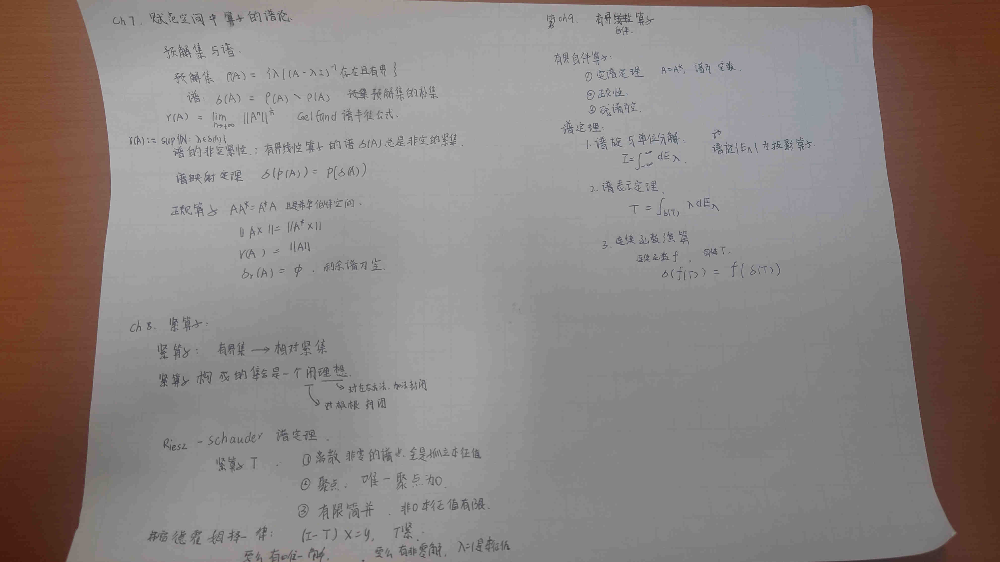

谱理论#

def#
本征值与本征向量 (Eigenvalues and Eigenvectors)#
若存在复数 \lambda\in\mathbb{C} 及非零向量 x\in\mathcal{D}(A)，使得
则称 \lambda 为算子 A 的本征值 (eigenvalue)，称 x 为对应的本征向量 (eigenvector)。
本征空间 (Eigenspace)#
对应于本征值 \lambda 的所有本征向量与零向量组成的集合，记作 E_\lambda：E_\lambda=\{x\in\mathcal{D}(A):(A-\lambda I)x=0\}=\ker(A-\lambda I)
其维度称为该本征值的几何重数。
预解集 (Resolvent Set) 与 预解式 (Resolvent)#
算子 A 的预解集 \rho(A) 定义为使得 (A-\lambda I) 存在有界逆算子的复数 \lambda 的集合。即 \lambda\in\rho(A) 当且仅当 (A-\lambda I) 是双射且其逆算子 (A-\lambda I)^{-1} 有界。逆算子亦称预解式：R_\lambda(A)=(A-\lambda I)^{-1}.
由于R_\lambda(A)对解方程有帮助， “预解式”这一名称是合适的．
谱 (Spectrum)#
谱 \sigma(A) 定义为\sigma(A)=\mathbb{C}\setminus\rho(A) . \quad有些地方用减号不用除号.
或者 \sigma(A)=\{\lambda\in\mathbb{C}:(A-\lambda I) \text{无界或不可逆}\}.
在无限维空间中，谱通常分为：
- 点谱 (Point spectrum) \sigma_p(A)：包含所有本征值 \lambda（即 (A-\lambda I) 非可逆且存在非零解）。 也就是说(A-λI)不是单射. (A-\lambda I)^-1不存在
- 连续谱 (Continuous spectrum) \sigma_c(A)：(A-\lambda I) 是单射且值域R(A-\lambda I)稠密，但逆算子不有界。 也就是说(A-λI)是单射但不是满射. (A-\lambda I)^-1 存在但无界.
- 残余谱 (Residual spectrum) \sigma_r(A)：(A-\lambda I) 不是满射（值域R(A-\lambda I)不稠密）。
residual spectrum 残余谱几乎不出现在物理应用中. 对于自伴算子（Self-adjoint Operator）——即量子力学中的可观测量——残谱是空的（σr=∅）。 这就是为什么我们在物理课上通常只听说过“离散谱”和“连续谱”，而没听说过“残谱”。它通常出现在非厄米算子（如非幺正的移位算子）中。
谱半径 (Spectral Radius)#
算子 A 的谱半径定义为
谱分解 (Spectral Decomposition)#
对于某些算子（例如自伴算子或正规算子），可由谱定理将其表示为谱测度或本征向量的“分解”，用于构造函数算子等。
在量子力学中，算子的谱对应于可观测量的可能测量结果：本征值为测量值，本征向量为对应的量子态。通过谱分析可研究系统性质与动力学。
resolvent性质#
预解式和谱的其他性质 (Resolvent ...)
预解式方程 (Resolvent Equation)：
R_\lambda - R_\mu = (\lambda - \mu) R_\lambda R_\mu
证明:
考虑等式左边的算符形式。由于 R_\lambda 和 R_\mu 是逆算符，我们可以利用恒等式 I = (A - \mu I) R_\mu 和 I = (A - \lambda I) R_\lambda。利用左乘和右乘技巧：
R_\lambda - R_\mu = R_\lambda \cdot I - I \cdot R_\mu
代入单位算符 I 的不同表达形式：
R_\lambda - R_\mu = R_\lambda (A - \mu I) R_\mu - R_\lambda (A - \lambda I) R_\mu
利用线性算子的分配律，提取共同的因子
R_\lambda（左侧）和 R_\mu（右侧）：
R_\lambda - R_\mu = R_\lambda \left[ (A - \mu I) - (A - \lambda I) \right] R_\mu
简化方括号内的各项：
(A - \mu I) - (A - \lambda I) = A - \mu I - A + \lambda I = (\lambda - \mu) I
代回原式，由于 \lambda, \mu 是复数（标量），可以移到最前面：
R_\lambda - R_\mu = R_\lambda [(\lambda - \mu) I] R_\mu = (\lambda - \mu) R_\lambda R_\mu
证毕。
物理：这在物理中被称为希尔伯特恒等式 (Hilbert Identity)，是推导微扰论和戴森级数 (Dyson Series) 的基础。
假设我们有一个基准算符（自由哈密顿量）H_0 和一个扰动项 V，总算符为 H = H_0 + V。
定义它们的预解式为：
* G_0(z) = (zI - H_0)^{-1} （自由传播子）
* G(z) = (zI - H)^{-1} （全传播子）
我们可以写出如下算符恒等式：
(zI - H_0) - (zI - H) = H - H_0 = V
两边同时左乘 G_0(z)，右乘 G(z)：
G_0(z) [ (zI - H_0) - (zI - H) ] G(z) = G_0(z) V G(z)
利用算符与其逆的关系 G_0(z)(zI - H_0) = I 和 (zI - H)G(z) = I，化简得：
G(z) - G_0(z) = G_0(z) V G(z)
移项得到算符形式的 Lippmann-Schwinger 方程：
G(z) = G_0(z) + G_0(z) V G(z)
解析性：了解预解算子 R_\lambda(T) 作为 \lambda 的函数，在预解集上是解析的。谱实际上就是这个函数的奇点（极点对应束缚态，割线对应连续谱）。
复分析工具在谱论中的应用：#
复分析在谱论中的应用
这一节是物理学家最得心应手的地方。
核心工具：全纯泛函演算 (Holomorphic Functional Calculus)。
f(T)=2\pi i \oint_\Gamma f(\lambda) R_\lambda(T) d\lambda
物理映射：这就是我们怎么计算算子函数的。比如时间演化算子 U(t)=e^{-iHt}，本质上就是对格林函数进行围道积分。
需要理解如何用柯西积分公式把“函数”作用在“算子”上。
一切都源于复变函数中最经典的柯西积分公式。
Step 1: 回忆标量情况#
设 f(z) 是一个全纯函数（解析函数）。如果你想求它在某个点 a 的值 f(a)，你不需要直接代入 a，而是可以在 a 周围画一个圈 \Gamma，然后算积分：
这里 \Gamma 必须包围点 a。
Step 2: 从数 a 到算子 T#
现在，如果我们想定义 f(T)（比如 e^T, \sin T, \sqrt{T}），我们直接把上面的 a 换成算子 T。
- 数值 a \longrightarrow 算子 T
- 分母中的 1 \longrightarrow 单位算子 I
- 除法 \frac{1}{\lambda - a} \longrightarrow 逆算子 (\lambda I - T)^{-1}
于是，公式变成了：
这里的 (\lambda I - T)^{-1} 正是我们在谱论中定义的预解算子（差一个负号，通常 R_\lambda(T) = (T - \lambda I)^{-1}，所以符号会抵消，或者调整积分方向）。
核心思想：
我们利用预解算子作为“内核”，把定义在复平面上的函数 f(\lambda) “投影”到了算子空间上。
格林函数与极点#
对于物理学家来说，预解算子就是格林函数。
其中 H 是哈密顿量，\lambda 是能量参数（通常记为 E）。
公式的物理意义#
当我们计算算子函数 f(H)（例如时间演化算子 U(t) = e^{-iHt}）时，全纯泛函演算告诉我们：
这个积分在干什么？
1. 扫描能谱：积分围道 \Gamma 包围了哈密顿量 H 的所有本征值（能级）。
2. 提取留数：格林函数 \frac{1}{\lambda - H} 在 H 的本征值 E_n 处有极点。
3. 加权求和：柯西积分定理告诉我们，围道积分等于所有极点的留数之和。
如果 H 有离散能级 E_n 和本征态 |n\rangle，格林函数可以写成谱分解形式：
把它代入积分公式：
结论：
这正是我们熟悉的量子力学操作——在能量本征基下，算子函数直接作用在把本征值上（即 e^{-iHt}|n\rangle = e^{-iE_n t}|n\rangle）。
但全纯泛函演算的威力在于：即使你解不出本征值（或者有连续谱），这个积分表达式依然成立！它提供了一种不依赖于对角化的、更本质的定义方式。
3. 一个具体的矩阵例子#
为了彻底搞懂，我们算一个简单的 2 \times 2 矩阵。
设 T = \begin{pmatrix} 0 & 1 \\ -1 & 0 \end{pmatrix}。我们想算 e^{tT}（即旋转矩阵）。
-
求本征值（奇点位置）：
\det(\lambda I - T) = \lambda^2 + 1 = 0 \implies \lambda = \pm i。
谱是 \sigma(T) = \{i, -i\}。 -
求预解算子（格林函数）：
$$
(\lambda I - T)^{-1} = \begin{pmatrix} \lambda & -1 \ 1 & \lambda \end{pmatrix}^{-1} = \frac{1}{\lambda^2 + 1} \begin{pmatrix} \lambda & 1 \ -1 & \lambda \end{pmatrix}
$$ -
应用公式：
令 f(\lambda) = e^{\lambda t}。我们需要计算：
$$
e^{tT} = \frac{1}{2\pi i} \oint_{\Gamma} e^{\lambda t} \frac{1}{(\lambda - i)(\lambda + i)} \begin{pmatrix} \lambda & 1 \ -1 & \lambda \end{pmatrix} d\lambda
$$
围道 \Gamma 包围 \pm i。 -
计算留数：
- 在 \lambda = i 处：
$$
\text{Res}(i) = \lim_{\lambda \to i} (\lambda - i) [\dots] = e^{it} \frac{1}{2i} \begin{pmatrix} i & 1 \ -1 & i \end{pmatrix}
$$ - 在 \lambda = -i 处：
$$
\text{Res}(-i) = \lim_{\lambda \to -i} (\lambda + i) [\dots] = e^{-it} \frac{1}{-2i} \begin{pmatrix} -i & 1 \ -1 & -i \end{pmatrix}
$$
- 在 \lambda = i 处：
-
相加得到结果：
利用欧拉公式 \cos t = \frac{e^{it} + e^{-it}}{2}, \sin t = \frac{e^{it} - e^{-it}}{2i}：e^{tT} = \text{Res}(i) + \text{Res}(-i) = \begin{pmatrix} \cos t & \sin t \\ -\sin t & \cos t \end{pmatrix}看！我们通过复积分，完美推导出了旋转矩阵。
总结#
对于物理学家，全纯泛函演算就是：
利用格林函数 (\lambda - H)^{-1} 将算子转化为复平面上的函数，通过围道积分，“筛选”出物理系统的能级信息，从而定义算子的演化。
它比泰勒展开（e^X = 1 + X + \dots）更强大，因为它可以处理算子无界的情况（只要积分收敛），这在量子场论中至关重要。
有界线性算子的谱性质#
谱半径 (Spectral Radius) r_\sigma(T)：
$$
r_\sigma(T) = \lim_{n \to \infty} |Tn|
$$
物理映射：它决定了微扰级数（如纽曼级数 \sum T^n）是否收敛。如果物理系统的耦合常数太大，导致算子范数超过收敛半径，微扰论就失效了（非微扰物理）。
紧算子 (Compact Operators)：紧算子的谱性质最像有限维矩阵（只有点谱），对应于束缚在有限箱子里的粒子。
紧线性算子(全连续算子):def:设T:X->Y是一个线性算子，如果对于X中任意有界子集B，T(B)在Y中是相对紧的（即其闭包是紧集），则称T为紧线性算子。
赋范空间紧算子的谱性质#

为什么有些能级是离散的？（第 8 章）
物理对应：束缚态、谐振子、盒中粒子。
定义 (8.1)：它是一种“很像有限维矩阵”的无限维算子。
谱性质 (8.3)：这是物理学家必须记住的结论！
紧算子的非零谱点全是本征值（没有连续谱）。
这些本征值是离散的，且只能聚积在 0 点。
物理意义：为什么原子在低能区的能级是一条条分立的？因为描述束缚态的哈密顿量的逆（或相关的积分算子）通常是紧算子。紧性保证了能级离散化。
弗雷德霍姆择一性 (Fredholm Alternative) (8.7)：
要么方程有唯一解，要么对应的齐次方程有非零解。
物理意义：在散射理论（Lippmann-Schwinger 方程）中用于讨论解的存在性。
谱定理 谱分解#
几乎只在希尔伯特空间中使用。其他空间没有正交的性质.
本节主要讨论希尔伯特空间中的有界自伴线性算子的谱定理 (Spectral Theorem)。
物理对应：厄米算符、投影测量、完备性关系。
创建日期: 2026-01-06